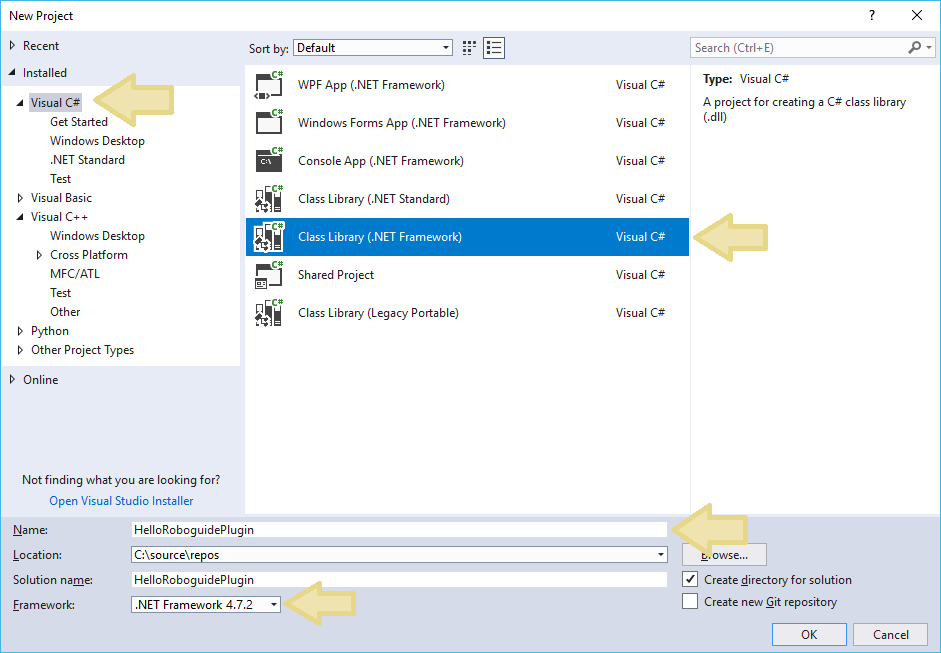
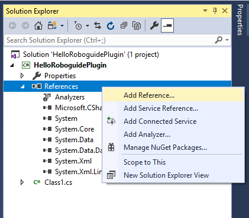
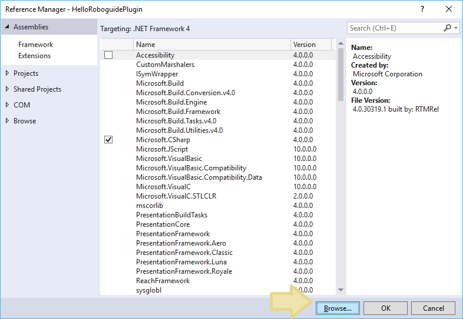
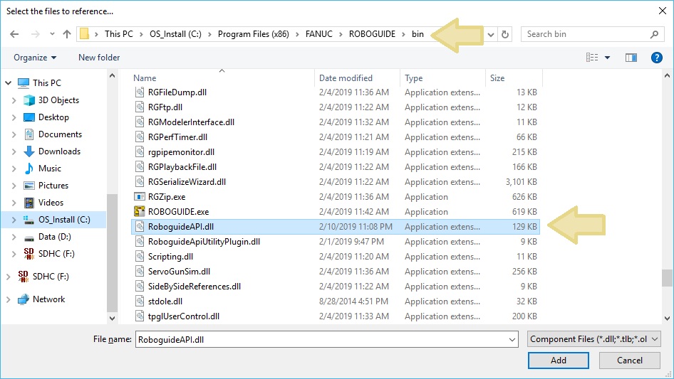
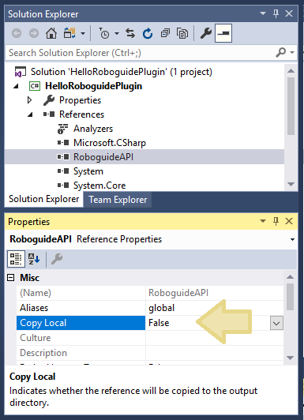
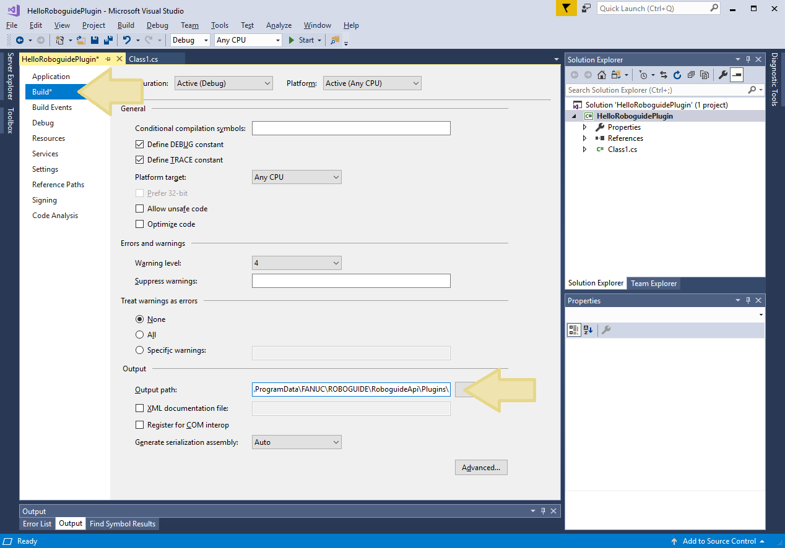
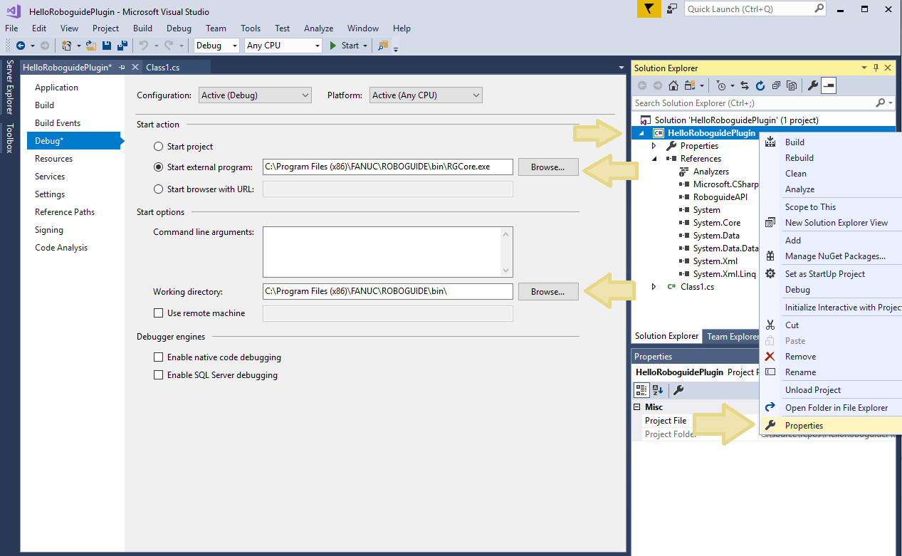
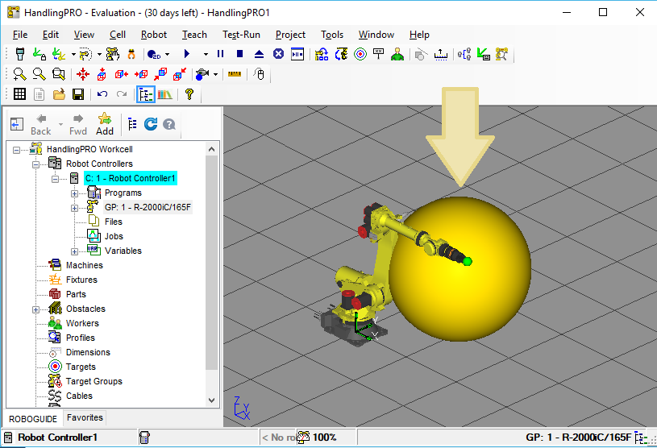

Getting Started
Creating a Plugin
1. Create a new C# assembly project in Visual Studio.
Select Class Library (.NET Framework) using .NET Framework 4.8.1. Use any name and project location that makes sense.

2. Add a reference to the RoboguideAPI assembly.
Right-click the references section of the plugin project and select "Add Reference". The Visual Studio Reference Manager will appear.

Select "Browse".

Navigate to the ROBOGUIDE bin directory (where the API assembly was installed),
and select the RoboguideAPI.dll assembly. The bin directory is typically
C:\Program Files (x86)\FANUC\ROBOGUIDE\bin

3. Configure the RoboguideAPI reference properties.
To prevent Visual Studio from unnecessarily copying RobouideAPI references, set "Copy Local" to False in the project properties window.

4. Configure the plugin output directory.
ROBOGUIDE will look for plugins in a special subdirectory of ProgramData. This is
typically C:\ProgramData\FANUC\ROBOGUIDE\RoboguideAPI\Plugins. Set the
output directory of the plugin to this folder so ROBOGUIDE will find it.

5. Configure the debugger.
To debug the plugin, configure Visual Studio to run the ROBOGUIDE executable. The
ROBOGUIDE executable is typically C:\Program Files (x86)\FANUC\ROBOGUIDE\bin\RGCore.exe.
It may be necessary to set the working directory to C:\Program Files (x86)\FANUC\ROBOGUIDE\bin\

6. Write some plugin code and run!
Visual Studio will start ROBOGUIDE automatically. Make sure to use "public" for the RoboguideAPIPlugin class. If everything is configured correctly, the plugin will be loaded and plugin code will be executed. Try setting a breakpoint.
using RoboguideAPI;
using RoboguideAPI.Data;
using RoboguideAPI.WorkcellObjects;
namespace HelloRoboguidePlugin
{
public class HelloRoboguidePlugin : RoboguideAPIPlugin
{
public override void OnWorkcellLoadComplete()
{
// Add a yellow sphere to the cell
Obstacle coolObstacle = RoboguideInstance.Workcell.CreateObstacle();
coolObstacle.Graphics.Shape = Graphics.ObjectShape.Sphere;
coolObstacle.LocalFrame = new Frame(1000, 1000, 1000, 0, 0, 0);
coolObstacle.Graphics.Color = new Color(255, 221, 0, 255);
}
}
}
